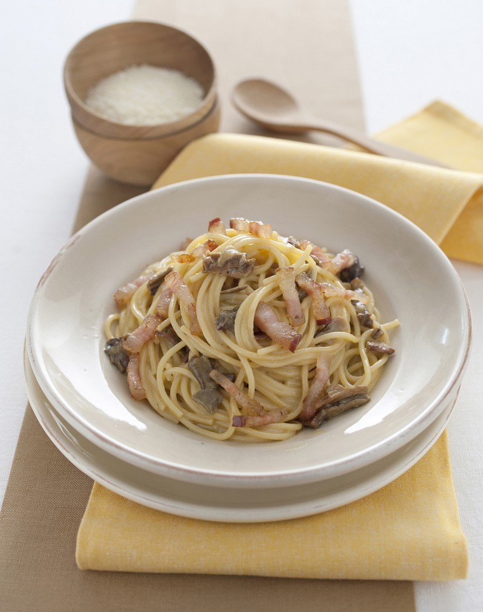

This was one of the first easy recipes I learnt to cook and can be mastered in just a few attempts!

4 x rashers streaky bacon, chopped
10g dried porcini mushrooms
4x closed cup mushrooms (25g each), thinly sliced
90g of value spaghetti
1 egg, beaten
30g of Parmesan cheese, grated
2 tsp olive oil
1/2 x small garlic clove, finely chopped
Serves: One
Difficulty: Easy
Cost: £2.06 per serving
Prep. Time: 5 mins
Cooking Time: 25 mins
Recipes like this one that involve raw or lightly cooked eggs should always use eggs that are as fresh as possible and have been stored according to the packaging guidelines.